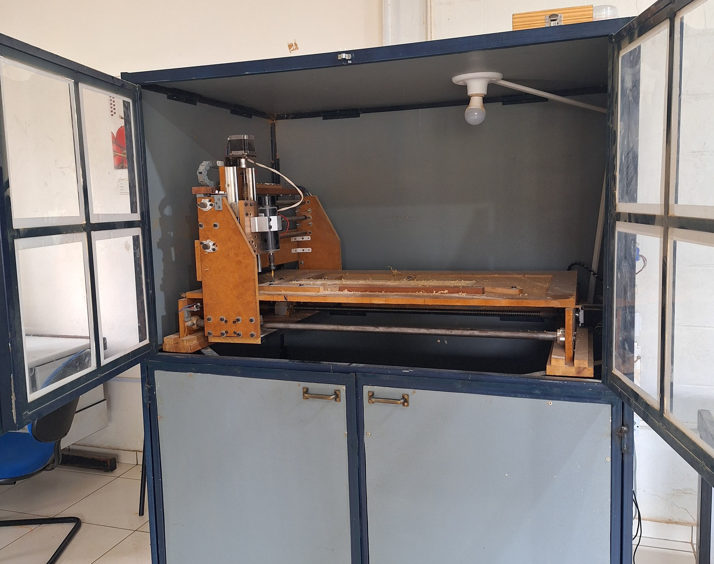
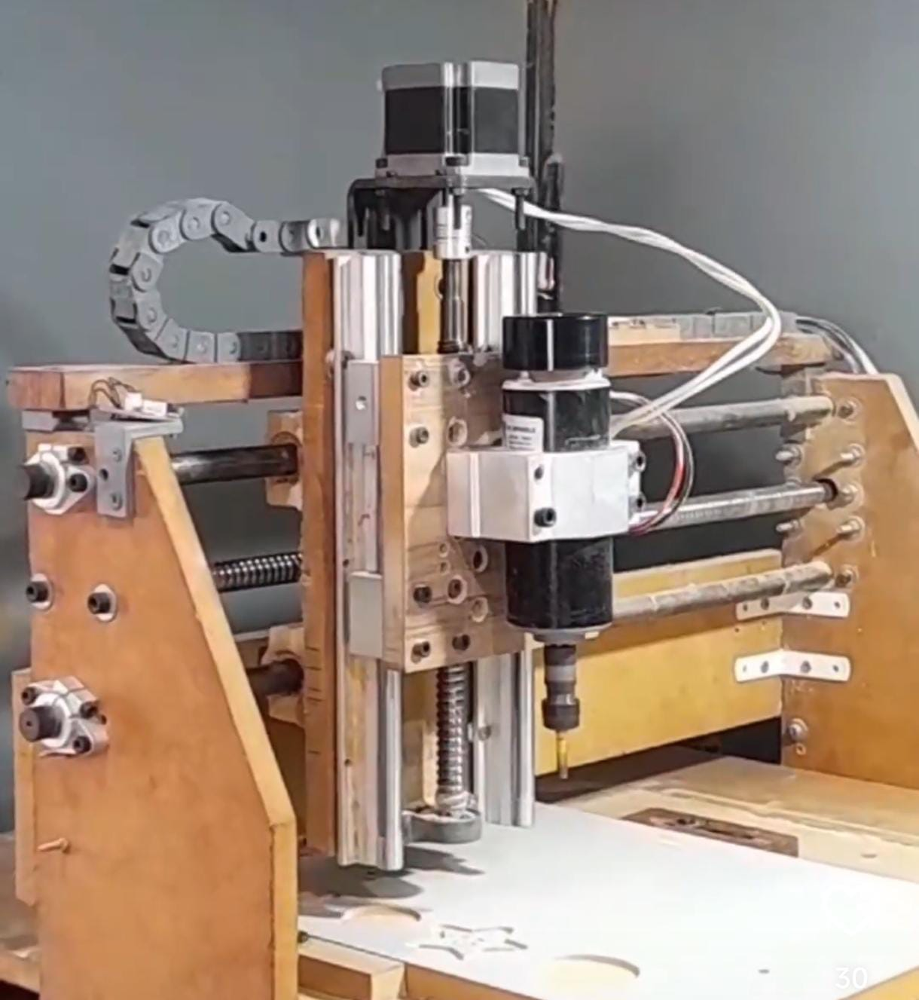

Chapter 4 FRESADORA (BIG FRESA)
Outra máquina que foi apresentada é a fresadora, conhecida por Big Fresa. Ela é uma CNC que realiza o processo de usinagem e é capaz de fabricar peças tridimensionais de vários tipos. No FABLAB, o principal material usado na Big Fresa é a madeira. O processo é subtrativo, o que significa que você começa com um bloco de material e a máquina vai removendo partes até chegar na peça desejada. Ela é a uma máquina com grande área de trabalho, o que permite criar peças grandes e complexas. Como toda CNC, a Big Fresa oferece alta precisão, gerando peças de excelente qualidade, especialmente quando a máquina está bem calibrada.

4.1 Funcionamento da Big Fresa
A Big Fresa usa motores de passo para seus movimentos, com três motores responsáveis pelos eixos X, Y e Z. A transmissão é feita por fusos em todos os eixos. A usinagem é realizada pelo spindle, que é um motor DC específico para fresadoras, com uma velocidade de rotação de até 12.000 RPM.

As fresas, que são as ferramentas de corte, são conectadas ao spindle por um sistema de pinça e rosca. Existem vários tipos de fresa, dependendo do material a ser usinado e da tarefa a ser executada, seja corte, gravação ou furação. Abaixo, você pode ver alguns exemplos de fresas utilizadas no laboratório.
Para começar a fabricar a peça, é preciso definir a origem de trabalho, levando em conta o sistema de coordenadas tridimensionais. A origem é configurada na parte superior da peça, e conforme o processo avança, a fresa desce no eixo Z negativo, removendo o material até atingir a forma desejada.
4.2 Desenho e Controle da Big Fresa
Para gerar o G-code para a Big Fresa, há duas principais opções de software usadas no FABLAB: Fusion 360 e Vectric Aspire. No Fusion 360, você começa modelando a peça em 3D, depois vai para a parte de usinagem, onde escolhe o tipo de fresa e projeta o caminho para a usinagem. Por fim, o arquivo G-code é gerado.
No Vectric Aspire, você pode começar com um desenho 2D vetorizado. No software, você define as ações, como cortes, preenchimentos e furos. Em seguida, ajusta parâmetros como o tipo e o diâmetro da fresa, profundidade de corte, velocidade de movimento, quantidade de passadas e a profundidade de cada passada. O Vectric Aspire também permite simular o processo de usinagem antes de gerar o G-code.
O controle da Big Fresa é feito pelo software UGS (Universal G-code Sender). Com ele, você abre o arquivo G-code e define a posição inicial da área de trabalho. Uma vez configurado, você pode iniciar a usinagem. A interface do UGS também permite controlar a máquina usando joystick, tornando o processo mais prático e intuitivo.